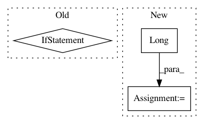

625451ab74f1942eb951337554d72005076a51b3,onmt/Translator.py,Translator,translateBatch,#Translator#Any#Any#,95
Before Change
if hasattr(batch, "src"):
_, src_lengths = batch.src
src = onmt.IO.make_features(batch, "src")
elif hasattr(batch, "src_img"):
src = onmt.IO.make_features(batch, "src_img")
src_lengths = None
elif hasattr(batch, "src_audio"):
After Change
src, context, encStates)
if src_lengths is None:
src_lengths = torch.Tensor(batch_size).type_as(context.data)\
.long()\
.fill_(context.size(0))
// (1b) Initialize for the decoder.
def var(a): return Variable(a, volatile=True)
In pattern: SUPERPATTERN
Frequency: 4
Non-data size: 3
Instances
Project Name: OpenNMT/OpenNMT-py
Commit Name: 625451ab74f1942eb951337554d72005076a51b3
Time: 2017-12-12
Author: dengyuntian@gmail.com
File Name: onmt/Translator.py
Class Name: Translator
Method Name: translateBatch
Project Name: OpenNMT/OpenNMT-py
Commit Name: 3795eabbdc08e59fe43622a0e1bffe3916332f0f
Time: 2017-12-11
Author: dengyuntian@gmail.com
File Name: onmt/modules/ImageEncoder.py
Class Name: ImageEncoder
Method Name: forward
Project Name: OpenNMT/OpenNMT-py
Commit Name: 017517d06144919555f9d991f13639ee4cc4babb
Time: 2017-11-17
Author: pltrdy@gmail.com
File Name: onmt/modules/CopyGenerator.py
Class Name: CopyGeneratorLossCompute
Method Name: compute_loss
Project Name: OpenNMT/OpenNMT-py
Commit Name: a5763a81a2180e1d99f678d31f0fb7b9c26f4dff
Time: 2017-11-17
Author: pltrdy@gmail.com
File Name: onmt/modules/CopyGenerator.py
Class Name: CopyGeneratorLossCompute
Method Name: compute_loss